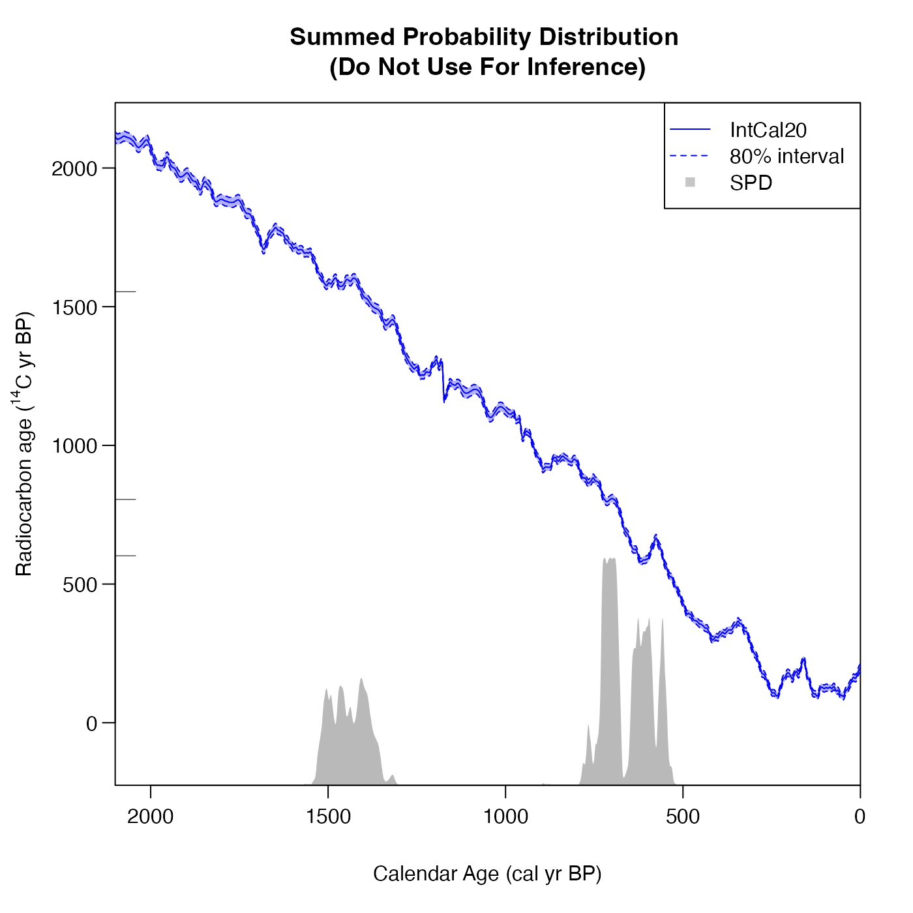

Find the summed probability distribution (SPD) for a set of radiocarbon observations
Source:R/FindSummedProbabilityDistribution.R
FindSummedProbabilityDistribution.RdTakes a set of radiocarbon determinations and uncertainties, independently
calibrates each one, and then averages the resultant calendar age estimates
to give the SPD estimate.
Important: This function should not be used for inference as SPDs are not statistically rigorous.
Instead use either of:
the Bayesian non-parametric summarisation approaches PolyaUrnBivarDirichlet or WalkerBivarDirichlet;
or the Poisson process rate approach PPcalibrate
The SPD function provided here is only intended for comparison. We provide a inbuilt plotting option to show the SPD alongside the
determinations and the calibration curve.
Usage
FindSummedProbabilityDistribution(
calendar_age_range_BP,
rc_determinations,
rc_sigmas,
calibration_curve,
F14C_inputs = FALSE,
resolution = 1,
plot_output = FALSE,
plot_cal_age_scale = "BP",
interval_width = "2sigma",
bespoke_probability = NA,
denscale = 3,
plot_pretty = TRUE
)Arguments
- calendar_age_range_BP
A vector of length 2 with the start and end calendar age BP to calculate the SPD over. These two values must be in order with start value less than end value, e.g., (600, 1700) cal yr BP. The code will extend this range (by 400 cal yrs each side) for conservativeness
- rc_determinations
A vector of observed radiocarbon determinations. Can be provided either as \({}^{14}\)C ages (in \({}^{14}\)C yr BP) or as F\({}^{14}\)C concentrations.
- rc_sigmas
A vector of the (1-sigma) measurement uncertainties for the radiocarbon determinations. Must be the same length as
rc_determinationsand given in the same units.- calibration_curve
A dataframe which must contain one column
calendar_age_BP, and also columnsc14_ageandc14_sigorf14candf14c_sig(or both sets). This format matches the curves supplied with this package, e.g., intcal20, intcal13, which contain all 5 columns.- F14C_inputs
TRUEif the providedrc_determinationsare F\({}^{14}\)C concentrations andFALSEif they are radiocarbon ages. Defaults toFALSE.- resolution
The distance between the calendar ages at which to calculate the calendar age probability. Default is 1.
- plot_output
TRUEif you wish to plot the determinations, the calibration curve, and the SPD on the same plot. Defaults toFALSE- plot_cal_age_scale
Only for usage when
plot_output = TRUE. The calendar scale to use for the x-axis. Allowed values are "BP", "AD" and "BC". The default is "BP", corresponding to plotting in cal yr BP.- interval_width
Only for usage when
plot_output = TRUE. The confidence intervals to show for the calibration curve. Choose from one of "1sigma" (68.3%), "2sigma" (95.4%) and "bespoke". Default is "2sigma".- bespoke_probability
The probability to use for the confidence interval if "bespoke" is chosen above. E.g. if 0.95 is chosen, then the 95% confidence interval is calculated. Ignored if "bespoke" is not chosen.
- denscale
Whether to scale the vertical range of the calendar age density plot relative to the calibration curve plot (optional). Default is 3 which means that the maximum SPD will be at 1/3 of the height of the plot.
- plot_pretty
logical, defaulting to
TRUE. If setTRUEthen will select pretty plotting margins (that create sufficient space for axis titles and rotates y-axis labels). IfFALSEwill implement current user values.
Value
A data frame with one column calendar_age_BP containing the calendar
ages, and the other column probability containing the probability at that
calendar age
See also
PolyaUrnBivarDirichlet, WalkerBivarDirichlet for rigorous non-parametric Bayesian alternatives; and PPcalibrate for a rigorous variable-rate Poisson process alternative.
Examples
# An example using 14C age BP and the IntCal 20 curve
SPD <- FindSummedProbabilityDistribution(
calendar_age_range_BP=c(400, 1700),
rc_determinations=c(602, 805, 1554),
rc_sigmas=c(35, 34, 45),
calibration_curve=intcal20)
plot(SPD, type = "l",
xlim = rev(range(SPD$calendar_age_BP)),
xlab = "Calendar Age (cal yr BP)")
# Using the inbuilt plotting features
SPD <- FindSummedProbabilityDistribution(
calendar_age_range_BP=c(400, 1700),
rc_determinations=c(602, 805, 1554),
rc_sigmas=c(35, 34, 45),
calibration_curve=intcal20,
plot_output = TRUE,
interval_width = "bespoke",
bespoke_probability = 0.8)

# An different example using F14C concentrations and the IntCal 13 curve
SPD <- FindSummedProbabilityDistribution(
calendar_age_range_BP=c(400, 2100),
rc_determinations=c(0.8, 0.85, 0.9),
rc_sigmas=c(0.01, 0.015, 0.012),
F14C_inputs=TRUE,
calibration_curve=intcal13)
plot(SPD, type = "l",
xlim = rev(range(SPD$calendar_age_BP)),
xlab = "Calendar Age (cal yr BP)")